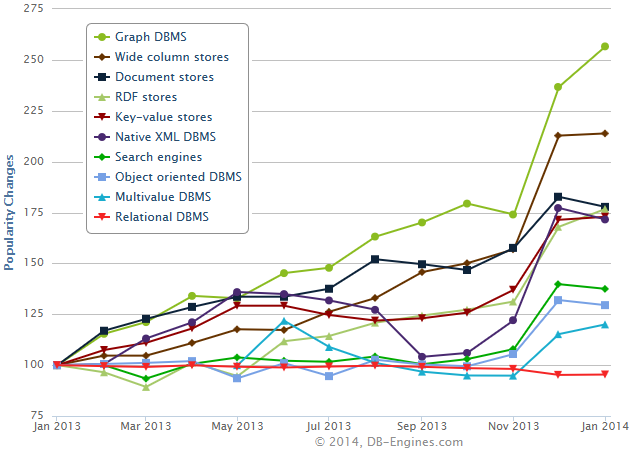

neo4j newsflash
Stefan Armbruster
e: stefan.armbruster@neotechnology.com
t: darthvader42
The graph changes
- say welcome to Claudia Remlinger, Marketing Manager EMEA
- farewell to Dirk Möller
- we're looking for EMEA Sales Manager
big time: Neo4j 2.0 (Dec 2013)
- Labelz
- Schema indexes
- shiny new browser
- Cypher changes:
- OPTIONAL MATCH
- MERGE
- UNION
- some breaking changes as well
References:
http://blog.neo4j.org/2013/12/neo4j-20-ga-graphs-for-everyone.html
new releases
- Feb 04: 2.0.1 & 1.9.6
- bugfix and performance release
- please do upgrade!
References:
http://blog.neo4j.org/2014/02/neo4j-201-maintenance-release.html
Launch of online training

http://www.neo4j.org/learn/online_course
graph db are fastest growing category
http://db-engines.com/en/blog_post/26
Comsysto blog: Hands-On Rundgang durch Neo4j 2.0
http://blog.comsysto.com/2014/01/22/ein-hands-on-rundgang-durch-neo4j-2-0/
Neo4j in insurance industry
Die Bayerische launches Neo4j based project
http://www.versicherungsbote.de/id/4790518/Die-Bayerische-und-iS2-beschreiten-Daten-Neuland/
Graph Databases - the book, free download

Events & Community
- Twitter: @Neo4jDE, @Neo4j
- http://www.neo4j.org/events
- 20.02. Neo4j Intro Tutorial Frankfurt
- 06.03. Neo4j Data Modeling Tutorial Zurich
- 25.03. Neo4j Intro Tutorial München